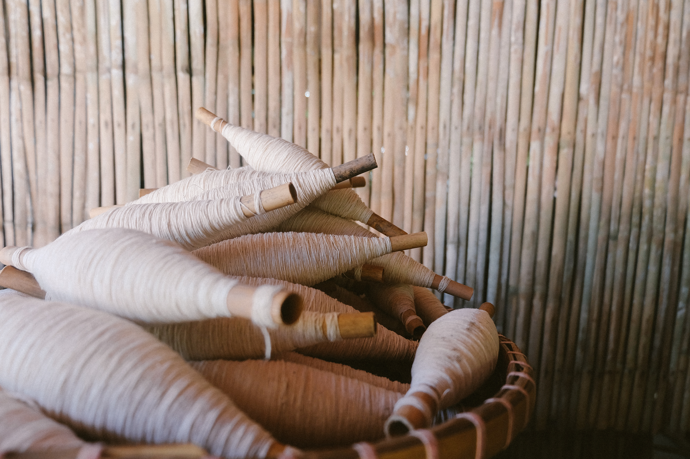
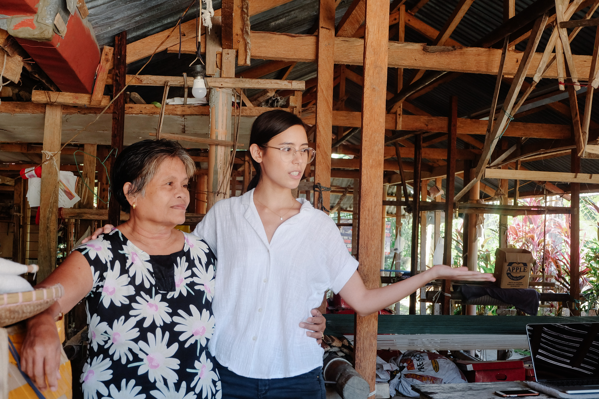
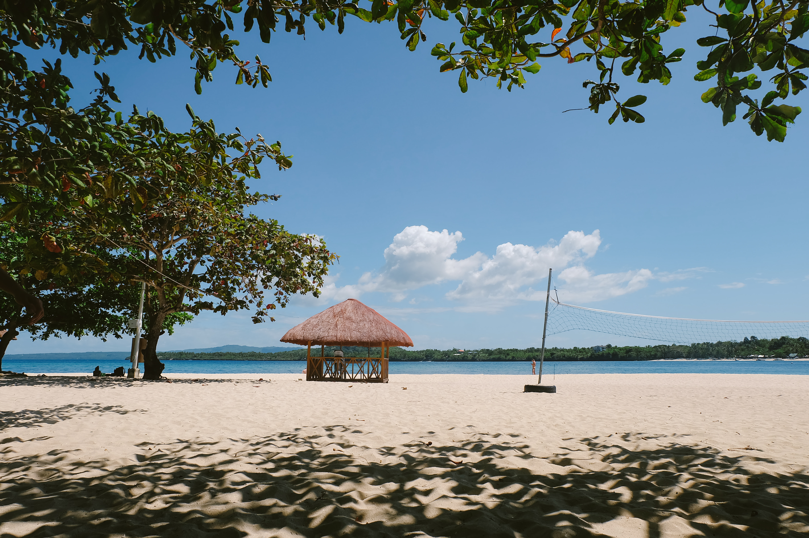
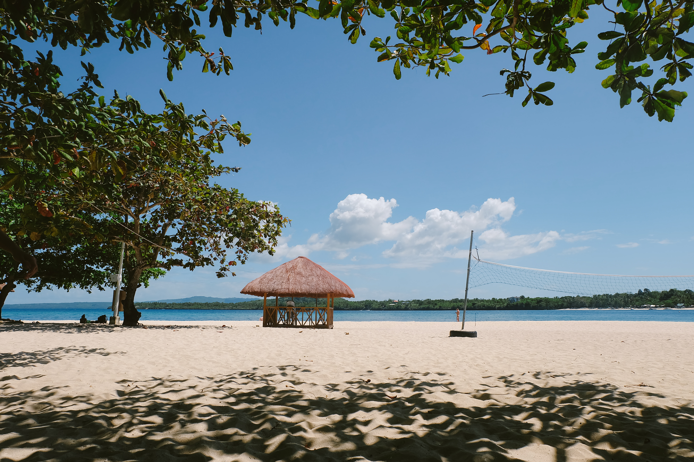

"What is your vision for the Philippines?"
With nothing but our carry-on baggage and this question in our heads, Works of Heart headed to Cebu for our annual planning and immersion.
Every year, we have always made it a point to set aside time and create a space for us to define not only our dreams for the country but also our role as a design studio in making those dreams a reality. Leaving our desks and heading to Cebu was our effort to remain grounded and to understand the context of the people we strive to support.

On our first day, we were greeted with a warm welcome from Happy Garaje and Backbone, design studios in Cebu. We visited Happy Garaje's studio and was inspired by the whimsical charm of their space—their shelves were brimming with storybook collections, toys, and sculptures!
 
The next day, we visited ANTHILL's research and innovation center in Argao. This allowed us to see, first-hand, the craftsmanship that goes into every weave. We watched them turn simple thread into beautiful intricate designs with decisive motions and the sound of clanging wood from their looms. During our visit, we also had the chance to observe their workshop for the weavers. The workshop tackled color theory and design trends with the goal of inspiring and empowering the weavers to create their own designs in the future.

We then spent the next few days experiencing some of the environmental attractions of Cebu—without skipping out on the must-eat cuisine, of course! One of the experiences we got to enjoy was the Bojo river cruise which is an eco-cultural tour. It consisted of a 1.4km boat ride while a local guide educated us about the indigenous mangroves in the area and their sustainable conservation efforts.
 

Camotes island was our last stop before we headed back to Manila. The clear waters were something to marvel at and snorkeling through the coral reefs was an enchanting experience for the team. Seeing for ourselves these ecological treasures definitely left a mark on us and all the more, we felt the need to preserve them.


Para! was initially meant to be a call for us to pause. But as it turned out, Para! all the more reinforced our reason to go forth. Although we went to Cebu with nothing but our carry-on baggage, we brought back with us a greater drive to achieve our vision of a nation that is free.
We call our annual planning and immersion "Para!", used to stop a jeepney once you've arrived to a place, because it is a way for us to explore the Philippines, stop, and take a break from our busy work schedules. "Para" in english also translates to "for", defined as "having the purpose of". Ultimately, we want to ground ourselves with what it is all about by visiting our past and present clients, partners, and communities all over the country.
"Para" saan? "Para" kanino?